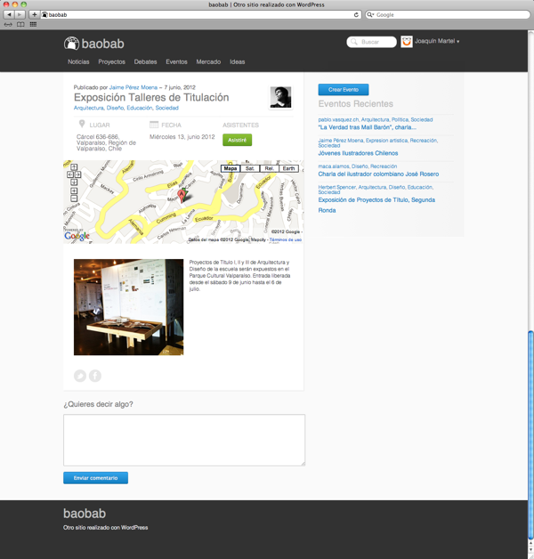
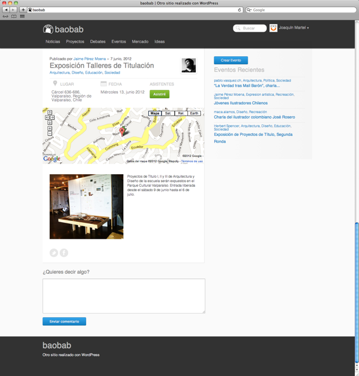

Baobab: Plataforma para el desarrollo de comunidades
Diseño Web, Diseño de Interacción, Desarrollo Web


 

Baobab es un framework de Wordpress que desea ser un camino para crear comunidad. Promueve la participación transparente y el compromiso. El pensar y actuar construyen futuro.
En la plataforma se pueden compartir y revelar temas, crear o potenciar ideas, llegar a acuerdos de forma transparente, dar a conocer un evento, poner en venta o comprar artículos, planificar y definir tareas para poder realizar acciones concretas. De esta manera, el usuario se compromete con su comunidad, valida su reputación y construye liderazgo.